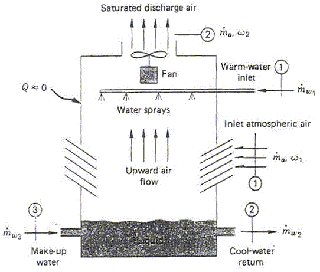

FAN INDUCED COOLING TOWER

A small-size cooling tower is designed to cool L (lt/s) of water per second, the inlet temperature of which is Twater inlet°C. The motor-driven fan induces Rair (m3/s) of air through the tower and the power absorbed is Pfan (kW). The air entering the tower is at Tentering air°C, and has a relative humidity of RHentering air%. The air leaving the tower can be assumed to be saturated and its temperature is Tleaving air°C. Calculate the final temperature of water and the amount of cooling water make-up required per second. Assume that the pressure remains constant throughout the tower at P (kPa).